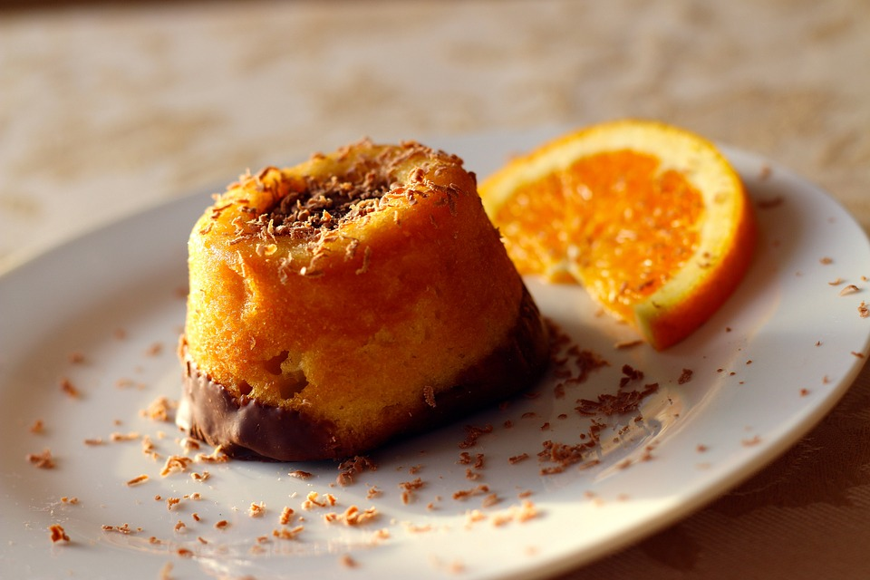

Easy Chocolate Cake

Ingredients
- 2 1/2 cups (1 lb 4 oz) all purpose flour
- 1 1/2 cups (12oz/ 360g) granulated white sugar
- 1 cup (8 fl oz) vegetable or canola oil
- 3 large eggs, at room temperature
- 1 cup (8 oz ) buttermilk
- 1/2 teaspoon baking soda
- 1/2 teaspoon salt
- 6 tablespoons unsweetened cocoa powder
- 1 tsp cinnamon
- 2 teaspoons vanilla extract
Directions
- Preheat oven to 350oF (180oC)
- Grease and line a 9-inch round cake tin
- In a large bowl, sieve together flour, sugar,cinnamon, cocoa powder, baking soda and salt
- In a separate jug, whisk together eggs, oil, buttermilk, and vanilla.
- Whisk into the flour mixture. You can do it by hand. Take care not to overmix the batter
- Spread the batter evenly into the prepared pan
- Bake 30 to 35 minutes or until a toothpick inserted in the center comes out clean
- Let cake cool in the tin then turn out onto a rack to cool completely